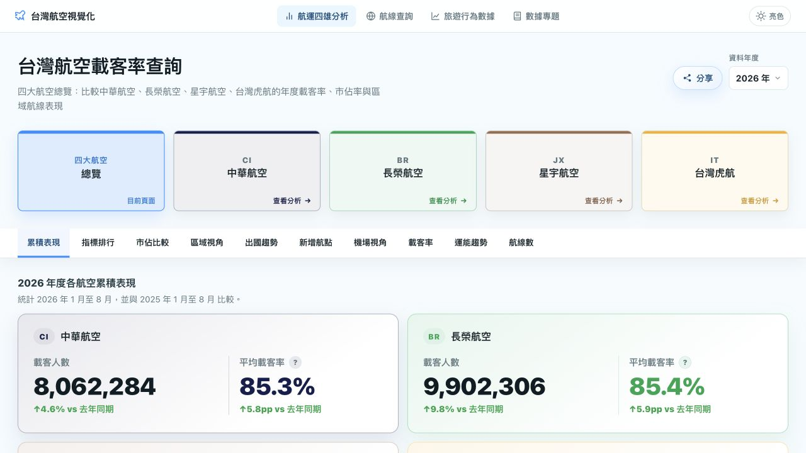

INDEPENDENT PROJECT / LIVE
↗

01 — DATA / VISUALIZATION
Taiwan Airline Data
台灣航空載客率與市場資料
我獨立開發的航空資料網站，整理台灣航空公司的載客率與市場資料。可以比較各家航空的表現、查詢航線，也能看每月的變化。
前往專案我是 kochingxiang，也可以叫我 Louis。
主要做 Vue 前端開發，近年負責銀行系統。
工作之外，也做自己的資料產品。
近幾年在銀行專案做信貸、財富管理與個人網銀。除了功能開發，我也負責第一階段 Code Review、共用工具與元件，並協助部門同事釐清技術和專案問題。
年軟體工程經驗
BUILDING SINCE 2017部門管理規模（約）
DEPARTMENT MANAGEMENT2023–2025 AI 競賽與技術獎項
2023 / 2024 / 2025
日常工作
仍以寫程式為主，
兼顧部門管理。
01 / SELECTED WORK
公開的資料產品，
以及兩次 AI 競賽的實作。

01 — DATA / VISUALIZATION
台灣航空載客率與市場資料
我獨立開發的航空資料網站，整理台灣航空公司的載客率與市場資料。可以比較各家航空的表現、查詢航線，也能看每月的變化。
前往專案02 — MACHINE LEARNING / GENERATIVE AI
以 XGBoost 預測貸款風險，用 SHAP 解釋模型結果，再串接 LLM 輔助分析。後端使用 Python 與 FastAPI，透過 Docker 部署到 Cloud Run。
第三屆人工智慧數位轉型競賽 · 第二名
03 — NLP / TALENT MATCHING
用自然語言處理整理人才與技能描述，將文字轉成結構化資料，計算技能相似度，再以視覺化呈現媒合結果。
第二屆 WITS AI Hackathon · 第三名
02 / ENGINEERING NOTES
這三項工作都來自開發時遇到的問題：頁面狀態該不該保留、API 還沒好怎麼測，以及多人開發時怎麼共用元件。
金融流程裡，返回上一頁應保留操作，重新進入卻不能誤用舊資料。我以 Vue 3 KeepAlive 與 Vue Router 設計導航感知的 Cache 機制，依來源與前進／返回行為，決定狀態還原或重新初始化。
建立統一的 Mock / Function Test 底層機制，只靠靜態 Mock Resources 就能執行完整業務流程。讓開發人員在 API 尚未完成或環境不可用時，也能獨立開發與驗證，成為專案共用的標準模式。
建立底層共用元件庫，集中管理可重複使用的 UI，並以類似 Storybook 的展示方式協助團隊理解與使用。同時擔任約 6 人前端團隊的第一線 Code Reviewer，持續檢視程式品質與無障礙互動。
03 / A LITTLE ABOUT ME
2017 年從電信公司的實習開始，
之後做過智慧家居後台、支付系統，現在主要做銀行前端。
2023 年開始兼任部門課長，負責績效考核、技術面試與同事的專案狀況。工作還是以寫程式為主，也曾擔任公司內部前端講師。
ON FRONTEND“Frontend is like a box of chocolates.”
資深前端工程師 / 部門課長
投入信貸、財富管理與個人網銀。2023 年升任部門課長，兼顧工程實作、約 25 人的部門管理與人才培育；同年獲 WITS 技術大神獎。
前端工程師
打造支付管理與金流服務，串接第三方支付；參與 ATFX Client Portal / App、WebView 整合與 Design Token 導入。
全端工程師
以 Vue、Node.js 與 AWS Serverless 參與智慧家居後台重構與微服務開發。
實習生 → 軟體工程師
獨立建置話務分析與管理系統，從資料視覺化、後台功能到 RESTful API。
MY WORKING TOOLKIT